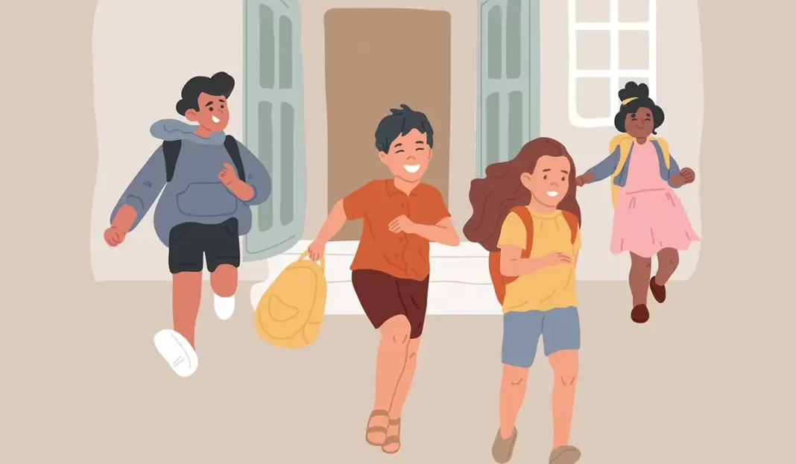

son entornos escolares seguros y respetuosos donde se garantiza el desarrollo integral (emocional, social, académico y físico) de los estudiantes, libres de cualquier tipo de agresión, acoso o maltrato.
Para evitar las aulas libres de violencia se requiere un enfoque integral y proactivo que involucre a toda la comunidad educativa: estudiantes, docentes, personal administrativo y familias. A continuación, se presentan estrategias prácticas sobre cómo prevenir la violencia y fomentar un entorno seguro: 1. Fomentar una Cultura de Respeto y Empatía Promover el Diálogo y la Comunicación: Establecer espacios regulares donde los estudiantes puedan expresar sus ideas, emociones y preocupaciones de manera abierta y segura. Enseñar Habilidades Sociales: Incluir en el currículo temas de educación socioemocional, inteligencia emocional y resolución pacífica de conflictos.
Modelar el Buen Trato: Los adultos (docentes y personal) deben ser modelos de conducta, mostrando respeto y empatía en todas sus interacciones. El trato amable y justo es fundamental.
